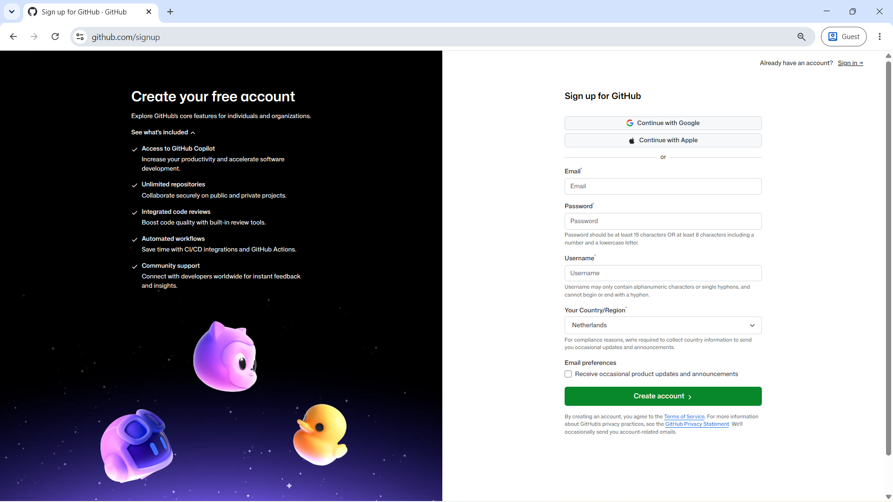
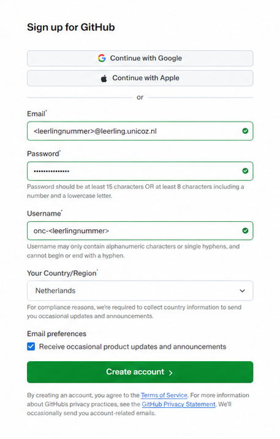
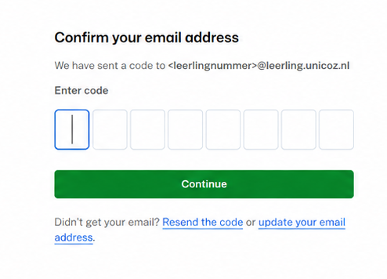
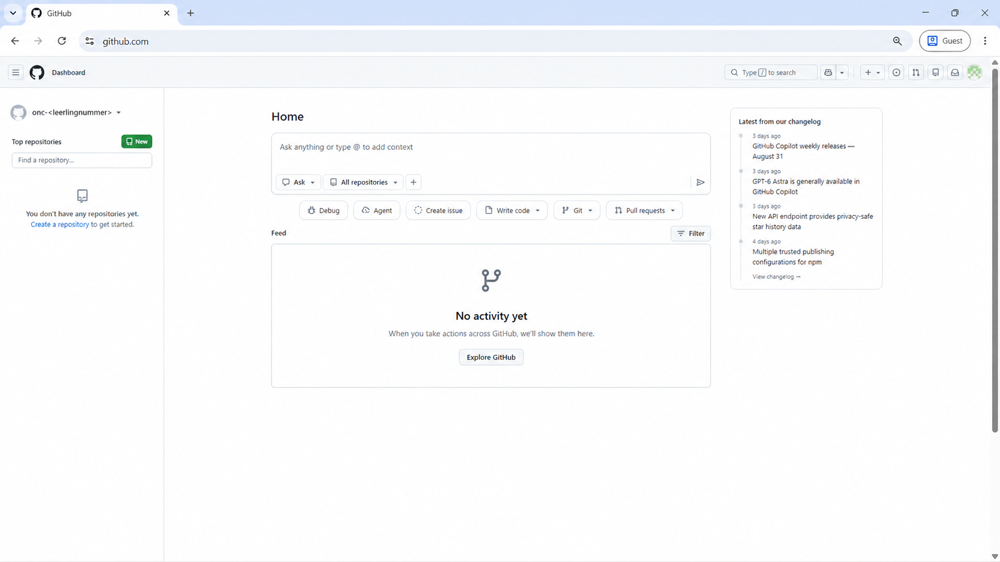

Git & GitHub
Deze handleiding helpt je bij het opzetten en gebruiken van Git en GitHub tijdens deze module.
Wat zijn Git en GitHub?
Tijdens Informatica ga je veel werken met bestanden waarin code staat. Terwijl je programmeert, verander je die bestanden steeds: je voegt code toe, past iets aan, probeert een andere oplossing of herstelt een fout.
Git
Git is een systeem voor versiebeheer.
Met Git kun je tijdens het werken momenten in de ontwikkeling van een project vastleggen. Zo'n opgeslagen moment heet een commit. Daardoor ontstaat een geschiedenis van je project waarin je later kunt terugzien:
- wat er is veranderd;
- wanneer iets is veranderd;
- wie een verandering heeft gemaakt;
- en waarom die verandering is gemaakt.
Dat is vooral belangrijk bij software, omdat een programma voortdurend wordt ontwikkeld en onderhouden. Als een verandering later problemen veroorzaakt, kun je in de geschiedenis terugzoeken wat er is gebeurd.
Git werkt op je eigen computer. Je hebt GitHub dus niet nodig om Git te kunnen gebruiken.
GitHub
GitHub is een online platform dat gebouwd is rondom Git.
Een project op GitHub noemen we een repository. In zo'n repository staat niet alleen de actuele versie van de bestanden, maar ook de Git-history van het project.
GitHub wordt gebruikt om software samen te ontwikkelen, beheren en onderhouden.
Meerdere mensen kunnen aan hetzelfde project werken zonder voortdurend bestanden naar elkaar te hoeven sturen. GitHub helpt daarbij onder andere met:
- samenwerken aan dezelfde code;
- veranderingen van verschillende ontwikkelaars bij elkaar brengen;
- veranderingen bespreken en controleren voordat ze worden toegevoegd;
- problemen, bugs en nieuwe ideeën vastleggen met Issues;
- bijhouden wie ergens aan werkt;
- documentatie bij een project bewaren;
- nieuwe versies van software publiceren;
- en websites rechtstreeks vanuit een repository publiceren.
Daardoor is GitHub veel meer dan alleen een plek om een back-up van code te bewaren.
GitHub wordt gebruikt door individuele programmeurs, studenten, docenten en open-sourceprojecten, maar ook door professionele softwareteams en organisaties. Kleine bedrijven kunnen er met een paar ontwikkelaars aan één product werken, terwijl grote organisaties GitHub gebruiken voor projecten waaraan honderden of duizenden mensen bijdragen.
Ook veel software die je dagelijks gebruikt wordt op deze manier ontwikkeld en onderhouden.
Git en GitHub horen dus bij elkaar, maar zijn niet hetzelfde:
- Git houdt de versies en veranderingen van een project bij;
- GitHub maakt het mogelijk om Git-projecten online te bewaren, te delen, samen te ontwikkelen en te onderhouden.
GitHub-account aanmaken
Om GitHub tijdens Informatica te kunnen gebruiken, heb je een eigen GitHub-account nodig.
Het account dat je met deze handleiding aanmaakt, is geen oefenaccount. Je gebruikt dit account tijdens deze module en bij volgende modules van het vak Informatica.
Dit account is onderdeel van je schoolwerk
Volg de stappen in deze handleiding precies.
- Gebruik je schoolmailadres:
<leerlingnummer>@leerling.unicoz.nl - Gebruik als GitHub-gebruikersnaam:
onc-<leerlingnummer> - Maak maar één GitHub-account aan.
- Verander na het aanmaken geen accountinstellingen, tenzij je daar tijdens de les instructie voor krijgt.
- Verwijder geen onderdelen waarvan je niet weet waarvoor ze dienen.
Door zelf instellingen, accountgegevens of later repositories te wijzigen of te verwijderen, kun je koppelingen of opgeslagen schoolwerk beschadigen. Niet alles kan door de docent worden hersteld.
Wil je zelf met GitHub experimenteren? Maak daarvoor een apart persoonlijk GitHub-account.
Wat betekent <leerlingnummer>?
In deze handleiding is <leerlingnummer> een placeholder.
Dat betekent dat je het hele stuk <leerlingnummer> vervangt door je eigen leerlingnummer.
De tekens < en > typ je niet mee.
Dus:
<leerlingnummer>@leerling.unicoz.nlbetekent: je eigen leerlingnummer, direct gevolgd door@leerling.unicoz.nlonc-<leerlingnummer>betekent:onc-, direct gevolgd door je eigen leerlingnummer
1. Open GitHub
Ga naar:
https://github.com/signup
Je komt op de pagina Create your free account.

Gebruik niet Continue with Google of Continue with Apple.
Je maakt het account aan met je schoolmailadres.
2. Vul je schoolmailadres in
Bij Email vul je je schoolmailadres in:
<leerlingnummer>@leerling.unicoz.nl
Vervang <leerlingnummer> door je eigen leerlingnummer. Typ de tekens < en > niet mee.
Let op
Controleer je leerlingnummer goed voordat je verdergaat.
3. Kies een wachtwoord
Maak bij Password een sterk wachtwoord aan dat voldoet aan de eisen van GitHub.
Gebruik een wachtwoord dat je kunt onthouden en dat je niet met andere leerlingen deelt.
Belangrijk
Je wachtwoord is persoonlijk.
De docent hoeft je wachtwoord niet te kennen en zal er nooit om vragen.
4. Kies de voorgeschreven gebruikersnaam
Bij Username gebruik je:
onc-<leerlingnummer>
Vervang <leerlingnummer> door je eigen leerlingnummer. Je gebruikersnaam bestaat dus uit onc- direct gevolgd door je leerlingnummer.
Bedenk geen eigen gebruikersnaam.
Gebruikersnaam bestaat al?
Geeft GitHub aan dat deze gebruikersnaam al bestaat?
Stop dan.
Kies niet zelf een andere gebruikersnaam en maak geen tweede account aan. Vraag de docent om hulp.
5. Controleer de overige gegevens
Controleer of bij Your Country/Region staat:
Netherlands
De optie bij Email preferences is niet nodig voor het vak Informatica. Je hoeft je niet aan te melden voor productupdates en aankondigingen van GitHub.
Controleer daarna nog één keer:
- je schoolmailadres;
- je gebruikersnaam
onc-<leerlingnummer>; - het gekozen land.

Als alles klopt, klik je op:
Create account
6. Bevestig je schoolmailadres
GitHub stuurt een e-mail naar je schoolmailadres.
Open je schoolmail en zoek de e-mail van GitHub. In deze e-mail staat een code van 8 cijfers.
Ga terug naar GitHub en vul deze code in.

Klik daarna op Continue.
7. Je account is aangemaakt
Na het bevestigen van je e-mailadres is je GitHub-account aangemaakt.
GitHub kan je direct aanmelden.
Als je eerst het inlogscherm krijgt, log je in met:
Username
onc-<leerlingnummer>
en het wachtwoord dat je zojuist hebt aangemaakt.
Wanneer je het GitHub-dashboard ziet, ben je klaar.

Klaar
Doe nu niets anders in GitHub.
Maak nog geen repositories aan en verander geen instellingen.
Tijdens de lessen krijg je stap voor stap instructie voor het gebruik van GitHub.